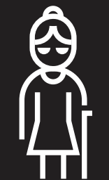
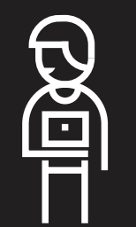
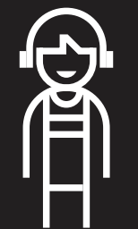

Playing FIFA
Using maps
Listening to news
Calling 911
Taking test in noise
Rushing for a bus
Watching tutorials
Permanent
 Person with one arm
Person with one arm
 Blind person
Blind person
Deaf person / Deaf
 Non-verbal person
Non-verbal person
Neuroatypical person
 Wheelchair user
Wheelchair user
 Weak internet
Weak internet
Temporary
 Person with arm injury
Person with arm injury

Person with cataract
 Person with ear infection
Person with ear infection
 Person with laryngitis
Person with laryngitis
 Person with concussion
Person with concussion
 Person with broken leg
Person with broken leg

Traveling person
Situational
 New parent
New parent

Distracted driver
Bartender
 Person with heavy accent
Person with heavy accent Person under stress
Person under stress Snow mound
Snow mound
 Person in metro
Person in metro